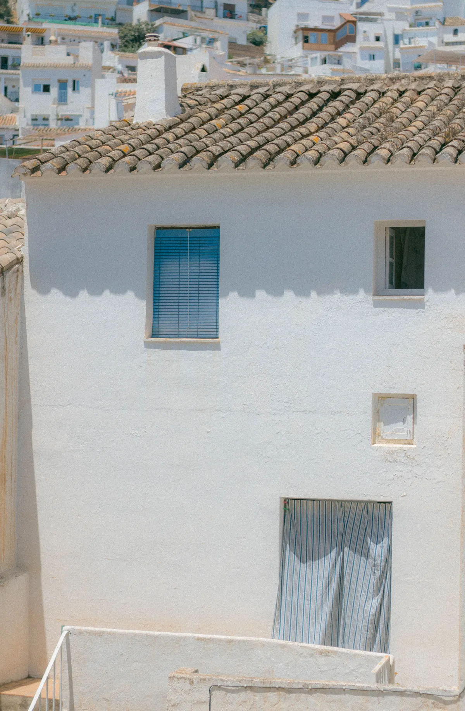
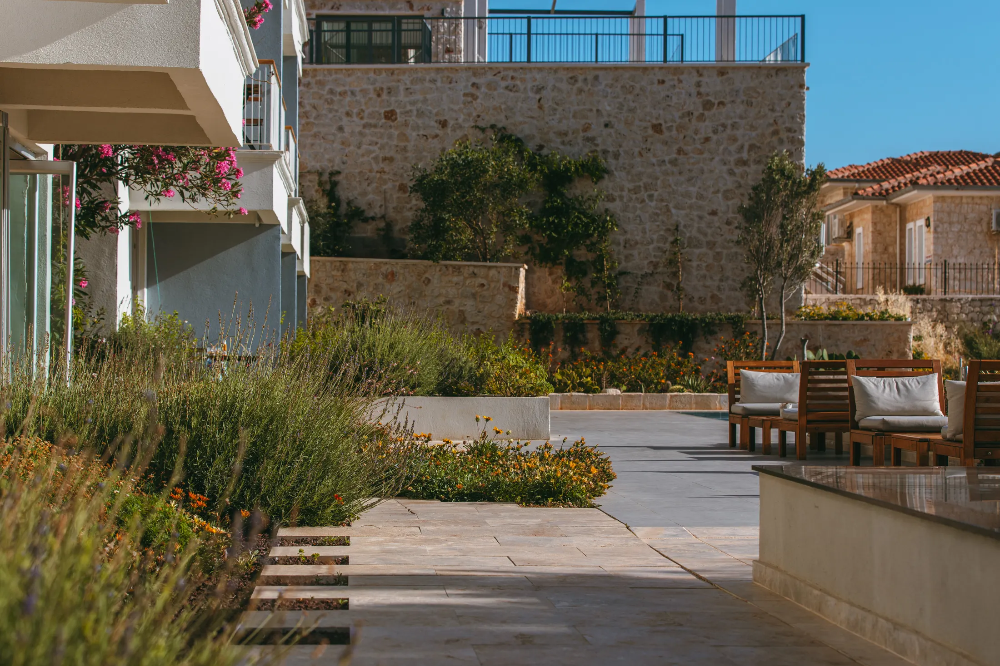
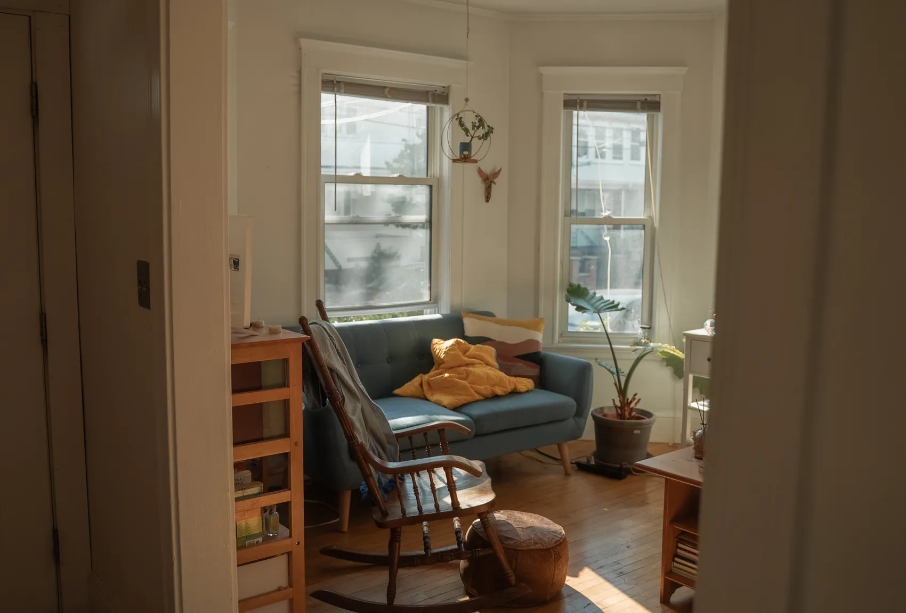
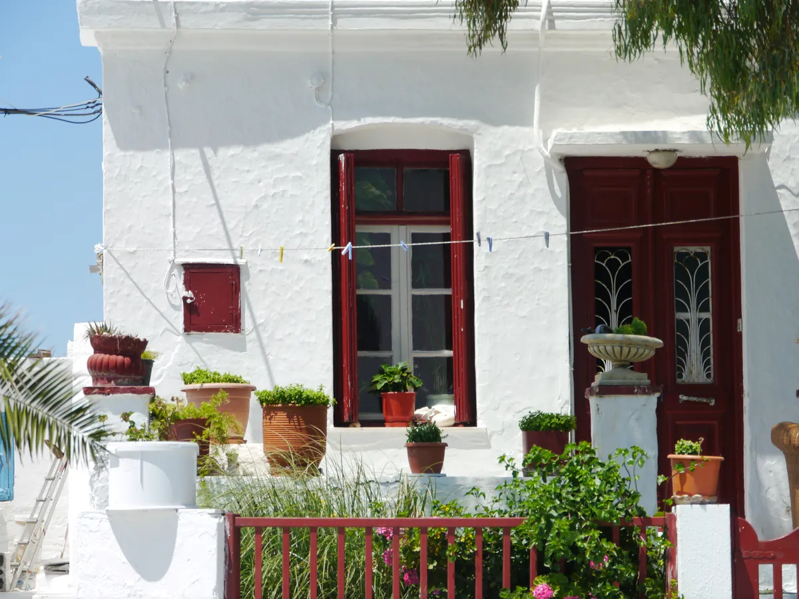
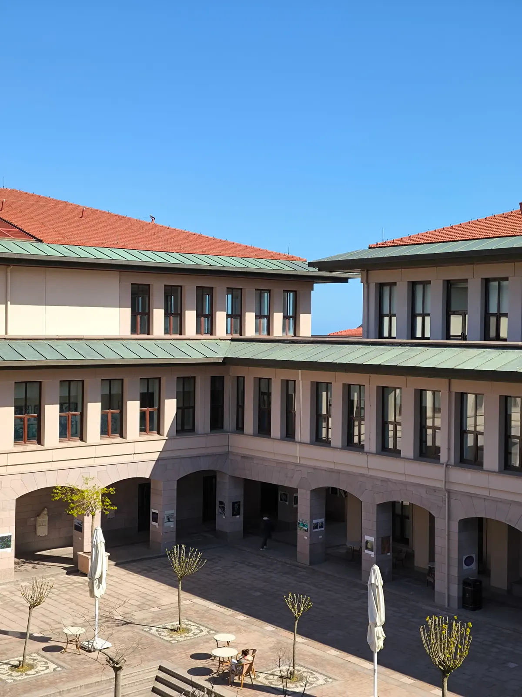

ARCHITECTURAL JOURNALREALTY CANOE — 01 / 05
REALTYCANOE
INMOBILIARIA /
EL BOSQUE, CÁDIZ

Espacios para
nuevas historias.
ARQUITECTURA / LUZ / LUGARPORTADA 01
LA INMOBILIARIA02 — DECLARACIÓN
Losespaciosimportan.
EL PUNTO DE PARTIDA
REALTY CANOE
Realty Canoe es una inmobiliaria situada en El Bosque, Cádiz. Contacta con nosotros para obtener información sobre tus necesidades inmobiliarias.
Una conversación para empezarESPACIOS PARA NUEVAS HISTORIASDECLARACIÓN 02
CUADERNO VISUAL03 — ARQUITECTURA
Notas sobre
el habitar.
Una secuencia de luz, materia y proporción.
Fotografías de referencia, no inmuebles disponibles.




Esta selección es una mirada editorial a la arquitectura. Las fotografías no pertenecen a una cartera de Realty Canoe ni se presentan como imágenes de El Bosque.
FIN DEL CUADERNO VISUALARQUITECTURA 03
IDENTIDAD LOCAL04 — EL LUGAR
ELBOSQUECÁDIZ
11670
- LOCALIDAD
- El Bosque, Cádiz
- DIRECCIÓN DE LA OFICINA
- Av. Juan XXIII, 23, Pta. Dcha.
11670 El Bosque, Cádiz - EL RECORRIDO
- Abrir Google Maps
INMOBILIARIA REALTY CANOEEL LUGAR 04
CONTINUAMOS LA CONVERSACIÓN05 — CONTRAPORTADA
Hablemos
de tu
próximo
paso.
600280386
INMOBILIARIA REALTY CANOE
Av. Juan XXIII, 23, Pta. Dcha.11670 El Bosque, Cádiz